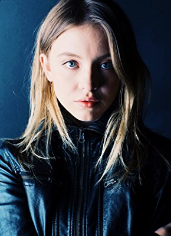

#10994 Under the Silver Lake

 IMDB-Wertung: 6.3 / 10
IMDB-Wertung: 6.3 / 10  Metascore: 61
Metascore: 61 
Der desillusionierte 33-jährige Sam entdeckt im Pool seines East-Side-Appartments in Los Angeles eine mysteriöse Frau namens Sarah . Sie haben sich kaum richtig kennengelernt, als Sarah plötzlich verschwunden ist und Sam sich auf eine surreale Suche quer durch Los Angeles begibt, um das Geheimnis ihres Verschwindens zu entschlüsseln. Seine Suche führt ihn in die düstersten Mysterien, Skandale und Verschwörungen in der Stadt der Engel.
Jahr: 2018
Dauer: 139 Minuten
FSK: 16
Land: USA Studio: A24Tonspuren: DTS - ,
Untertitel: Deutsch,
Auflösung: 1080p (1920x808) Größe: 6553 MB
Genre: Thriller, Drama, Komödie, Krimi, Mystery
Regisseur: David Robert Mitchell
Drehbuch: David Robert Mitchell
Soundtrack: Disasterpeace
Darsteller:
 Andrew Garfield als Sam
Andrew Garfield als Sam- Wendy Vanden Heuvel als Topless Bird Woman
- Deborah Geffner als Mom
 Riley Keough als Sarah
Riley Keough als Sarah Riki Lindhome als Actress
Riki Lindhome als Actress Chris Gann als Jefferson Sevence
Chris Gann als Jefferson Sevence Callie Hernandez als Millicent Sevence
Callie Hernandez als Millicent Sevence- Jessica Makinson als Mrs. Sevence
- Reese Hartwig als Sevence Kid #1
- Izzie Coffey als Sevence Kid #2
- Kayla DiVenere als Sevence Kid #3
- Tucker Meek als Sevence Kid #4
- Sky Elobar als Clerk
- Stephanie Moore als Brunette Roomate
- Sibongile Mlambo als Blonde Roommate
- Jackson Gann als Stupid Boy #1
 Rex Linn als Manager
Rex Linn als Manager Topher Grace als Bar Buddy
Topher Grace als Bar Buddy- Jules Willcox als Young Drunk Woman
- Rozie Bacchi als Old Drunk Woman
- Zosia Mamet als Troy
- Annabelle Dexter-Jones als Fannie
- Laura-Leigh Claire als Mae
- Christina Wildes als Bikini Top Hat Girl #1
- Nicole Disson als Housewife Poet
- Luke Baines als Jesus
- Allie MacDonald als Meek Bride
- Victoria Bruno als Clara Bow Bride
- Lola Blanc als Reading Glasses Bride
- Silversun Pickups als Band
- Grace Van Patten als Balloon Girl
- Cheyenne Haynes als Bathroom Girl #2
- Elizabeth Hinkler als Bathroom Girl #3
 Jimmi Simpson als Allen
Jimmi Simpson als Allen- Pepi Sonuga als Emerald Beauty
- Ivy Matheson als Yellow Miniskirt
- Gabrielle Maiden als Blue Miniskirt
- Brittney Parker Rose als Green Mini Skirt
- Oscar Best als Tow Man
 Patrick Fischler als Comic Man
Patrick Fischler als Comic Man- Bobbi Salvör Menuez als Shooting Star #1
-  Sydney Sweeney als Shooting Star #2
- Greg Wayne als Diamond Grill
 John Eddins als Tuxedo Bouncer
John Eddins als Tuxedo Bouncer- Mary Cameron Rogers als Record Girl
- Guy Nardulli als Door Guard
- David Yow als Homeless King
 Adam Bartley als Cop
Adam Bartley als Cop Jeremy Bobb als Songwriter
Jeremy Bobb als Songwriter- June Carryl als Sheriff
Datei: X:\2018(N-Z)\Under the Silver Lake (2018, FSK16, 1920x808).mkv seit 16.04.2019
Festplatte: HD 2018(G-Z)-2019(A-Z)
 Es gibt insgesamt 172 Filme in der Gruppe '2018(N-Z)'
Es gibt insgesamt 172 Filme in der Gruppe '2018(N-Z)'